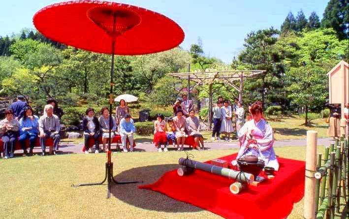

さ ： 五月晴れ 万葉祭りの 恋の唄
一言でいうと？
万葉行列、大茶会が楽しめる味真野の春祭り

味真野地区で、毎年ゴールデンウィークの5月3・4日に開かれるお祭りです。
万葉行列や茶道各流派がお点前を披露する万葉大茶会、バンド演奏、和太鼓、ミニコンサート、万葉相聞歌朗唱などが行われます。
お祭りのメインは？
万葉行列
味真野苑は万葉集(奈良時代の和歌集)ゆかりの地。
万葉行列とは万葉時代の衣装を来た人や、万葉集に登場する人達の役の人が町中を練り歩くパレードです！
どこでやってるの？
万葉の里 味真野苑(周辺)
味真野万葉まつりは味真野苑とその周辺で行われます。来場者数は1万人！祭りの時期にはたくさんののぼり旗があがりますよ。
恋のパワースポットがある？
継体天皇、照日の前の銅像前
味真野苑の西側に「継体天皇(けいたいてんのう)と照日の前(てるひのまえ)の像」があります。その2人が見つめる先に恋のパワースポットと呼ばれるエリアがあります。
▼ハート型のエリア♡
毎年あじまの万葉祭りが来ると「今年も来たなあ」って思います！私は家が茶道をしていたので、お茶会の手伝いで何度か参加しました。万葉行列も見たことがありますが本当に大勢の人が練り歩くので見ているだけで楽しいです！